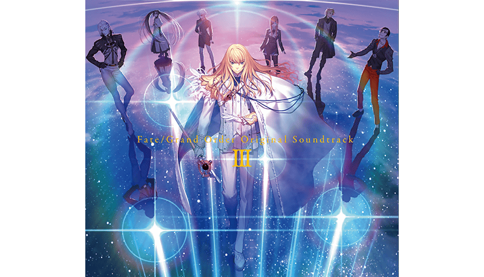

可在遊戲內MyRoom選擇的「播放機」追加新樂曲。
本次新追加的樂曲為從在2018年配信的第2部 第1章「Lostbelt No.1 永久凍土帝國 安娜塔西亞 獸國的皇女」到第3章「Lostbelt No.3 人智統合真國 SIN 紅之月下美人」的樂曲為首，於各種活動等釋出的全50首。
◆追加時間◆
2019年5月13日(一) 17:00～
原聲帶第三彈 2019年5月15日(三)發售！
包含上述介紹在「播放機」追加的50首，全3張組的原聲帶第三彈「Fate/Grand Order Original Soundtrack Ⅲ」在2019年5月15日(三)發售！
詳情請自下述URL確認。
https://www.fate-go.jp/music/ost3.html

以期間限定在達文西工房的「魔力稜鏡交換」追加下述的概念禮裝。
|
★★★★★SSR |
◆概念禮裝交換期間◆
2019年5月13日(一) 17:00～7月31日(三) 22:59
| 追加道具 | 能交換 次數 |
1次交換所需的 魔力稜鏡數 |
|---|---|---|
| 【期間限定】 ★5(SSR)パーソナル・コーチング | 5次 | 1000個 |